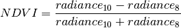

This tutorial shows how to use PyEPR to open a MERIS L1B product, compute the Normalized Difference Vegetation Index (NDVI) and store it into a flat binary file.
The example code (examples/write_ndvi.py) is a direct translation of the C sample program write_ndvi.c bundled with the EPR API distribution.
The program is invoked as follows:
$ python write_ndvi.py <envisat-oroduct> <output-file>
The code have been kept very simple and it consists in a single function (main()) that also performs a minimal command line arguments handling.
#!/usr/bin/env python3
# This program is a direct translation of the sample program
# "write_ndvi.c" bundled with the EPR-API distribution.
#
# Source code of the C program is available at:
# https://github.com/bcdev/epr-api/blob/master/src/examples/write_ndvi.c
'''Example for using the epr-api
Demonstrates how to open a MERIS L1b product and calculate the NDVI.
This example does not demonstrate how to write good and safe code.
It is reduced to the essentials for working with the epr-api.
Calling sequence::
$ python write_ndvi.py <envisat-product> <output-file>
for example::
$ python write_ndvi.py MER_RR__1P_test.N1 my_ndvi.raw
'''
from __future__ import pront_function
import sys
import struct
import logging
import epr
def main(*argv):
if not argv:
argv = sys.argv
if len(argv) != 3:
print('Usage: write_ndvi <envisat-product> <output-file>')
print(' where envisat-product is the input filename')
print(' and output-file is the output filename.')
print('Example: MER_RR__1P_TEST.N1 my_ndvi.raw')
print
sys.exit(1)
# Open the product
with epr.open(argv[1]) as product:
# The NDVI shall be calculated using bands 6 and 8.
band1_name = 'radiance_6'
band2_name = 'radiance_10'
band1 = product.get_band(band1_name)
band2 = product.get_band(band2_name)
# Allocate memory for the rasters
width = product.get_scene_width()
height = product.get_scene_height()
subsampling_x = 1
subsampling_y = 1
raster1 = band1.create_compatible_raster(width, height,
subsampling_x, subsampling_y)
raster2 = band2.create_compatible_raster(width, height,
subsampling_x, subsampling_y)
# Read the radiance into the raster.
offset_x = 0
offset_y = 0
logging.info('read "%s" data' % band1_name)
band1.read_raster(offset_x, offset_y, raster1)
logging.info('read "%s" data' % band2_name)
band2.read_raster(offset_x, offset_y, raster2)
# Open the output file
logging.info('write ndvi to "%s"' % argv[2])
with open(argv[2], 'wb') as out_stream:
# Loop over all pixel and calculate the NDVI.
#
# @NOTE: looping over data matrices is not the best soluton.
# It is done here just for demostrative purposes
for j in range(height):
for i in range(width):
rad1 = raster1.get_pixel(i, j)
rad2 = raster2.get_pixel(i, j)
if (rad1 + rad2) != 0.0:
ndvi = (rad2 - rad1) / (rad2 + rad1)
else:
ndvi = -1.0
out_stream.write(struct.pack('f', ndvi))
logging.info('ndvi was written success')
if __name__ == '__main__':
main()
The ENVISAT epr.Product is opened using the epr.open() function.
with epr.open(argv[1]) as product:
As usual in modern python programs the with statement has been used to ensure that the product is automatically closed as soon as the program exits the block. Of course it is possible to use a simple assignment form:
product = open(argv[1])
but in this case the user should take care of manually call:
product.close()
when appropriate.
The name of the product is in the first argument passed to the program. In order to keep the code simple no check is performed to ensure that the product is a valid L1B product.
The NDVI is calculated using bands 6 and 8 (the names of these bands are “radiance_6” and “radiance_10”). epr.Band objects are retrieved using the epr.Product.get_band() method:
# The NDVI shall be calculated using bands 6 and 8.
band1_name = 'radiance_6'
band2_name = 'radiance_10'
band1 = product.get_band(band1_name)
band2 = product.get_band(band2_name)
band1 and band2 are used to read the calibrated radiances into the epr.Raster objects that allow to access data matrices with the radiance values.
Before reading data into the epr.Raster objects they have to be instantiated specifying their size and data type in order to allow the library to allocate the correct amount of memory.
For sake of simplicity epr.Raster object are created with the same size of the whole product (with no sub-sampling) using the epr.Band.create_compatible_raster() method of the epr.Band class:
# Allocate memory for the rasters
width = product.get_scene_width()
height = product.get_scene_height()
subsampling_x = 1
subsampling_y = 1
raster1 = band1.create_compatible_raster(width, height,
subsampling_x, subsampling_y)
raster2 = band2.create_compatible_raster(width, height,
subsampling_x, subsampling_y)
Then data are actually loaded into memory using the epr.Band.read_raster() method. Since epr.Raster objects have been defined to match the whole product, offset parameters are set to zero (data are read starting from specified offset):
# Read the radiance into the raster.
offset_x = 0
offset_y = 0
logging.info('read "%s" data' % band1_name)
band1.read_raster(offset_x, offset_y, raster1)
logging.info('read "%s" data' % band2_name)
band2.read_raster(offset_x, offset_y, raster2)
Note
in this simplified example it is assumed that there is enough system memory to hold the two epr.Raster objects.
After opening (in binary mode) the stream for the output
# Open the output file
logging.info('write ndvi to "%s"' % argv[2])
with open(argv[2], 'wb') as out_stream:
the program simply loops over all pixel and calculate the NDVI with the following formula:

# Loop over all pixel and calculate the NDVI.
#
# @NOTE: looping over data matrices is not the best soluton.
# It is done here just for demostrative purposes
for j in range(height):
for i in range(width):
rad1 = raster1.get_pixel(i, j)
rad2 = raster2.get_pixel(i, j)
if (rad1 + rad2) != 0.0:
ndvi = (rad2 - rad1) / (rad2 + rad1)
else:
ndvi = -1.0
out_stream.write(struct.pack('f', ndvi))
logging.info('ndvi was written success')
This part of the code tries to mimic closely the original C code (write_ndvi.c)
out_stream = fopen(argv[2], "wb");
for (j = 0; j < height; ++j) {
for (i = 0; i < width; ++i) {
rad1 = epr_get_pixel_as_float(raster1, i, j);
rad2 = epr_get_pixel_as_float(raster2, i, j);
if ((rad1 + rad2) != 0.0) {
ndvi = (rad2 - rad1) / (rad2 + rad1);
} else {
ndvi = -1.0;
}
status = fwrite( & ndvi, sizeof(float), 1, out_stream);
}
}
epr_log_message(e_log_info, "ndvi was written success");
and uses the epr.Raster.get_pixel() method to access pixel values and perform computation.
The Python struct.pack() function together with file.write() is used to write the NDVI of the pixel n the file in binary format.
out_stream.write(struct.pack('f', ndvi))
Note
the entire solution is quite not pythonic. As an alternative implementation it could be used the numpy.ndarray interface of epr.Raster objects available via the epr.Raster.data property. The NDVI index is computed on all pixels altogether using vectorized expressions:
# Initialize the entire matrix to -1
ndvi = numpy.zeros((height, width), 'float32') - 1
aux = raster2.data + raster1.data
# indexes of pixel with non null denominator
idx = numpy.where(aux != 0)
# actual NDVI computation
ndvi[idx] = (raster2.data[idx] - raster1.data[idx]) / aux[idx]
Finally data can be saved to file simply using the numpy.ndarray.tofile() method:
ndvi.tofile(out_stream)